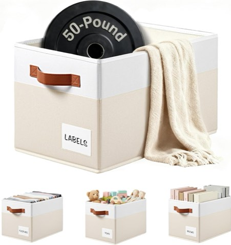
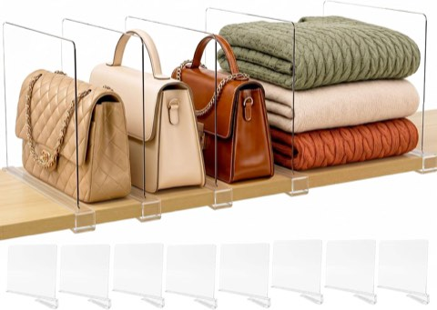
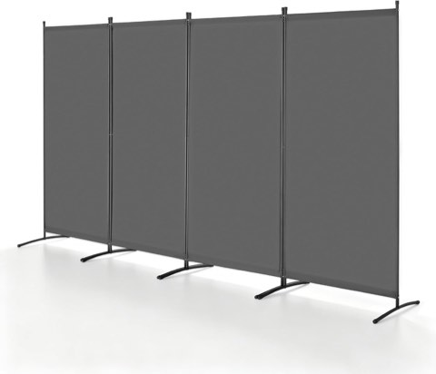
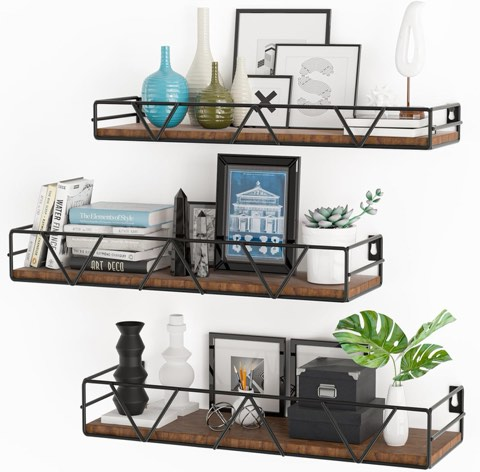
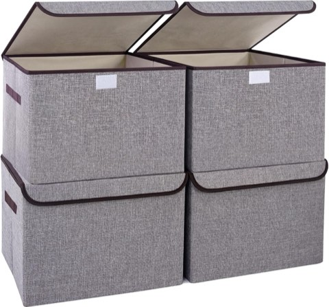

Most small bedrooms do not stay organized because the system behind them is not built around how the room actually gets used.
Folding clothes neatly and lining up a few boxes feels productive in the moment, but it collapses again within days if the underlying setup does not match real habits.
More storage is not the fix, either.
Buying baskets and bins just gives clutter more places to hide.
The real shift is fewer things, clearer zones, and making daily items genuinely easy to reach, that is what actually makes a small room start working instead of fighting back.

15 Small Bedroom Organization Ideas
1. Rotate Items by Season
There is no real reason winter blankets need to sit out in summer, or summer clothes need to stay front and center in winter.
Storing off-season items under the bed in labeled bins, and keeping only current-season items accessible, frees up space instantly.
It is a way to reduce clutter without getting rid of anything, essentially a free refresh for the room every few months.


4 Pack Large Closet Shelf Storage Baskets with Handles and Label Holders
Shop on Amazon2. Keep Surfaces Genuinely Clear
Even a technically organized room feels chaotic if the surfaces are covered.
Visual clutter reads as mental clutter almost instantly.
Limiting a dresser or nightstand to a few daily essentials and one or two decorative pieces keeps the whole room feeling calmer.
A simple rule works well here: if it does not genuinely belong on that surface, it does not stay there.
Strict, but it holds up.


3. Add Vertical Closet Organizers
Closets waste a huge amount of vertical space by default, and fixing that alone can double or triple what is actually usable.
Hanging shelves, vertical dividers, and stackable bins all put that wasted height to work instead of leaving it empty.
The payoff is better visibility and easier access, no more digging through a pile to find something that was there the whole time.


SortNStore Clear Acrylic Shelf Dividers for Closet Purse Organizing, 8 Pack
Shop on Amazon4. Hide Storage Inside the Furniture
For anyone who genuinely hates visual clutter, furniture that hides storage inside it solves a lot of problems at once.
A storage bed, an ottoman, a bench, or a hollow side table all keep a room looking clean while still holding everything that needs a home.
Out of sight does not mean forgotten here, it just means controlled, which is a meaningfully different thing in a small space.

5. Choose Foldable or Stackable Pieces
Fixed furniture locks a small room into one configuration.
Foldable and stackable pieces hand back real control over the layout.
A foldable chair, a stackable stool, or a collapsible desk can expand the usable space when needed and disappear when it is not.
Swapping one bulky chair for a foldable version is often enough to open up real room to move, a small change with a noticeably bigger payoff.

6. Create Defined Zones
Treating a small bedroom as one undivided space is a common mistake.
Even a tight room benefits from clearly defined zones.
A sleeping area, a storage area, a small work corner, and a dressing spot, separated with a rug or a shift in lighting, give the room real structure.
Once those zones exist, the room starts to feel organized by design instead of by accident.


VEVOR 4 Panel Folding Room Divider, 136 Inch Wide, Portable Partition Screen
Shop on Amazon7. Swap the Bedside Table for an Organizer
Not every small bedroom has room for a full bedside table, and honestly, not every bedroom needs one.
A compact bedside organizer holds a phone, glasses, a book, and a charger with the same function in a fraction of the footprint.
It keeps the essentials within reach while freeing up real floor space, and it means nothing gets knocked over reaching for a phone at 2 a.m.

8. Hang Hooks Wherever They will Fit
Hooks are a small, often-overlooked change with an outsized impact on how a room actually functions day to day.
Behind the door, next to the bed, or inside the closet are all strong spots for a bag, a jacket, or a scarf that would otherwise end up in a pile.
A couple of hooks installed near the bed for daily items is often enough to eliminate the one random pile that keeps reappearing no matter what else gets organized.

9. Use Storage Baskets, With Real Restraint
Baskets look great in photos, but without a clear system they turn into clutter collectors fast.
Assigning one purpose per basket and labeling it clearly keeps the whole system from sliding back into chaos.
Under a shelf, inside a closet, or on top of a wardrobe are all strong spots for them, one basket, one category, no exceptions.

10. Use the Back of the Door
A door is one of the most overlooked storage opportunities in any small bedroom, just standing there doing nothing while the rest of the room runs out of space.
An over-the-door organizer holds shoes, accessories, toiletries, or bags without using a single inch of floor space.
Everything stays visible and contained, which makes daily use considerably easier than digging through a drawer.

11. Rework the Closet Layout
Most closets look full but are actually just poorly organized.
Fixing the layout alone tends to free up far more room than expected.
A second hanging rod, slim hangers, shelf dividers, and a hanging organizer all stretch the existing space considerably further.
Grouping clothes by category and keeping the frequently worn ones within easy reach turns a chaotic closet into something that actually functions.

12. Choose Furniture That Pulls Double Duty
In a small room, every piece of furniture should be doing more than one job.
Anything that only serves a single purpose is wasting space that could be working harder.
A bed with storage drawers, an ottoman with a hidden compartment, or a foldable desk all deliver real function without adding bulk.
Swapping a plain bedside table for a storage ottoman keeps the same footprint while doubling the function, that trade-off is the whole strategy in miniature.

13. Declutter Before Organizing Anything
Organizing without decluttering first is really just rearranging the same clutter into neater piles.
The decluttering step is the one most people want to skip, and it is also the one that actually matters.
Three honest questions settle most of it: is this used regularly, is it actually liked, and would it get bought again today?
A no to any of those is a sign it can go.
A simple rule helps here, anything untouched for six months is worth questioning.
It sounds harsh, but it is consistently effective.
14. Install Floating Shelves for Vertical Space
Floating shelves do more than hold things, they visually expand a room by using wall space instead of floor space.
Mounted above the bed, above a desk, or in an unused corner, they keep the floor open, which is what actually makes a small room feel bigger.
Books, a few decorative pieces, and daily essentials work well up there, just stopping short of turning the shelf into a second storage unit.



Floating Wall Shelves with Rails, Set of 3, Farmhouse Style for Bedroom
Shop on Amazon15. Put Under-Bed Storage to Work
A bed already takes up a huge chunk of a small room's floor plan, so it might as well earn its keep beyond just sleeping.
Low-profile bins with lids, used for seasonal clothes, extra bedding, or shoes, unlock a surprising amount of hidden storage without adding any visible clutter.
Labeling each bin and sticking to one category per container keeps it from turning into a catch-all.
A bed with built-in drawers takes the whole idea even further.

A Few Rules Worth Locking In First
Walls are the most underused real estate in a small bedroom, shelves, hooks, and hanging organizers lift items off the floor and free up space instantly.
Hiding the mess matters just as much as creating storage in the first place: closed bins and under-bed containers keep a room calm in a way open shelving rarely manages in real life.
And daily convenience should drive placement, anything used constantly needs to stay within arm's reach, while occasional items can live further away.


Bagnizer 22 Quart Foldable Linen Storage Bin with Flip-Top Lid and Handles
Shop on AmazonFinal Thoughts
None of this requires a bigger room, just better decisions about the one that already exists.
A tiny hotel room can feel spacious through intentional design, and the same principles translate directly into a small bedroom at home.
Start with whichever idea solves the most obvious daily frustration, then layer in the rest over time.
The room does not need a full overhaul in one weekend to start feeling noticeably more functional.